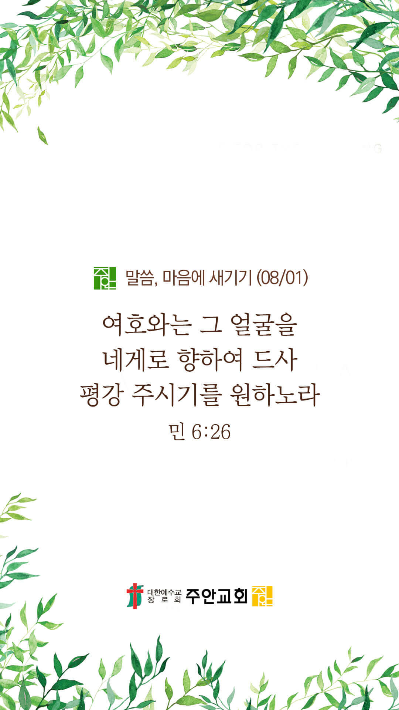

온라인 기도실 안내
2021년 08월01일(일)~08월 07일(토)
- 온라인 기도실은 온 회중이 함께 주님 앞으로 나아가는 자리입니다
- 30분 정도 여유를 가지고 하시기 바랍니다
- 말씀과 묵상, 찬양과 기도로 나아갑니다
- 배경 음악이 나올 수 있습니다 볼륨을 조절해주세요
준비가 되셨으면 아래의 버튼을 눌러주세요
할렐루야
내 영혼아 여호와를 찬양하라
시 146:1
- 가사를 묵상하며 읽습니다
삶의 작은 일에도
그 마음 알기 원하네
그 길 그 좁은 길로 가길 원해
나의 작음을 알고
그 분의 크심을 알며
소망 그 깊은 길로 가기 원하네
저 높이 솟은 산이 되기보다
여기 오름직한 동산이 되길
내 가는 길만 비추기보다는
누군가의 길을 비춰준다면
할렐루야
내 영혼아 여호와를 찬양하라
시 146:1
- 가사를 묵상하며 읽습니다
내가 노래하듯이
또 내가 얘기하듯이 살길
나 그렇게 죽기 원하네
삶의 한 절이라도
그 분을 닮기 원하네
사랑 그 깊은 길로 가기원하네
그 높은 길로 가기원하네
할렐루야
내 영혼아 여호와를 찬양하라
시 146:1
소원 by 한웅재
위의 찬양이 끝나면 말씀읽기를 눌러주시면 됩니다
주의 말씀은 내 발에 등이요
내 길에 빛이니이다 (시119:105)
오늘의 말씀입니다
음악 소리가 크면 조절하시기 바랍니다

마음의 묵상
민 6:26
“여호와는 그 얼굴을 네게로 향하여 드사 평강 주시기를 원하노라 할지니라 하라”
1. 주님을 늘 바라보며 살고 계신가요?
2. 주님은 어떤 얼굴로 당신을 바라보고 계실까요?
3. “주의 얼굴을 비추사 평강을 주소서”라고 잠시 기도합시다
주님, 저와 늘 동행하여 주소서
회개, 삶의 방향을 바꾸는 결정
나의 시선에 주님의 사랑이 가득하길...
“서로 친절하게 하며 불쌍히 여기며
서로 용서하기를
하나님이 그리스도 안에서
너희를 용서하심과 같이 하라”
- 에베소서 4:32 -
3분 정도 회개하며 주님 앞에 나아갑니다
사슴이 시냇물을 찾기에 갈급함 같이
시42:1
- 다음의 말씀을 소리 내어 읽습니다
[누가복음 12:27-31]
27 백합화를 생각하여 보라 실도 만들지 않고 짜지도 아니하느니라 그러나 내가 너희에게 말하노니 솔로몬의 모든 영광으로도 입은 것이 이 꽃 하나만큼 훌륭하지 못하였느니라
28 오늘 있다가 내일 아궁이에 던져지는 들풀도 하나님이 이렇게 입히시거든 하물며 너희일까보냐 믿음이 작은 자들아
사슴이 시냇물을 찾기에 갈급함 같이
시42:1
- 다음의 말씀을 소리 내어 읽습니다
[누가복음 12:27-31]
29 너희는 무엇을 먹을까 무엇을 마실까 하여 구하지 말며 근심하지도 말라
30 이 모든 것은 세상 백성들이 구하는 것이라 너희 아버지께서는 이런 것이 너희에게 있어야 할 것을 아시느니라
31 다만 너희는 그의 나라를 구하라 그리하면 이런 것들을 너희에게 더하시리라
하나님 나라
1. 하나님의 나라가 속히 이 땅에 임하게 하소서
하나님 아버지,
전 세계에 바이러스의 의료 사각지대에 놓인 자들을 긍휼히 여겨주시고, 그들에게 온전한 치료와 도움의 손길이 임하게 하소서.
내전과 탄압으로 인해 고통과 두려움에 있는 자들에게 하나님의 보호하심과 도우심이 있게 하소서.
간절한 마음으로 3분 정도 기도합시다
남과 북
2. 남북한이 속히 복음으로 통일되게 하소서
하나님 아버지,
바이러스와 가뭄으로 인해서 극심한 식량난과 영양실조를 겪고 있는 북한 주민들과 어린이들을 도와주소서.
구호단체들과 지원단체들의 접근이 가능하도록 국경이 열리게 하시고, 북한 땅에 단비가 내려 가뭄의 고통이 사라지게 하소서.
메마른 북한 주민들의 심령에도 복음의 단비가 내려, 북한의 수 많은 영혼들이 구원받게 하소서.
간절한 마음으로 3분 정도 기도합시다
대한민국
3. 우리나라가 하나님을 경외하는 나라가 되게 하소서
하나님 아버지,
바이러스 감염증 상황이 장기화 되면서 많은 사람들의 마음과 정신이 아프고 힘들어하고 있습니다. 우리나라 국민들에게 소망을 더하여 주시고 예수 보혈의 능력으로 치유해주셔서,
이 어려움을 잘 이겨내게 하소서. 생명을 경시하는 풍조가 사라져 자신과 타인의 생명을 존중하며 섬기는 나라와 민족이 되게 하소서.
간절한 마음으로 3분 정도 기도합시다
한국교회
4. 한국교회가 성령으로 새롭게 부흥되게 하소서
하나님 아버지,
이번 여름에 열리는 한국 교회 모든 수련회와 캠프를 통해서 한국교회의 다음세대들, 어린이, 청소년, 청년들이 살아계신 하나님을 만나게 하소서.
온라인으로 드려지더라도 하나님께서 역사하셔서 한국교회의 다음세대가 하나님과 동행하며 살아가는 요셉과 같은 형통한 세대가 되게 하소서.
간절한 마음으로 3분 정도 기도합시다
주안교회
5. 주안교회가 다음 세대를 세우는 선교적 교회가 되게 하소서
알파와 오메가요,
처음과 마지막이신 하나님 아버지, 주안의 모든 성도들이 우리를 가장 긴 안목으로 바라보시고, 우리에게 가장 선한 것이 무엇인지를
아시는 하나님만을 계속해서 바라보며 믿음 안에서 인내하며 기도하게 하소서. 우리가 무엇보다 먼저 하나님의 나라와 의를 구할 때,
모든 것을 합력하여 선을 이루시는 하나님의 역사를 경험하게 하소서.
간절한 마음으로 3분 정도 기도합시다
주안교회 교회학교
하나님 아버지,
주안의 모든 다음세대들이 믿음가운데 든든히 성장하게 하소서. 교육국의 아동1국(7/25-8/7), 아동2국(7/30-8/1), 청소년국(8/13-15)에서
진행되는 여름사역을 통해 주안의 아이들 안에서 예수님을 만난 이야기가 넘쳐나고, 회심의 역사가 일어나게 하소서.
간절한 마음으로 3분 정도 기도합시다
감사의 기도
- 오늘 기도를 인도하신 주님께 감사를 올려드립니다
- 아래의 구절을 읽고 주님께 감사의 마음을 올려드립시다
“여호와께 감사하라
그는 선하시며
그의 인자하심이 영원함이로다”
- 시편 118장 29절 -
고요한 가운데 잠시 침묵하시기 바랍니다
파송, 세상을 향하여
- 오늘의 온라인 기도를 마쳤습니다
기도를 들으신 주님께서 평안히 가라 하십니다
주님께서 우리와 함께 하시니 두려울 것이 없습니다
새벽을 깨우며
- 새벽기도회 안내입니다